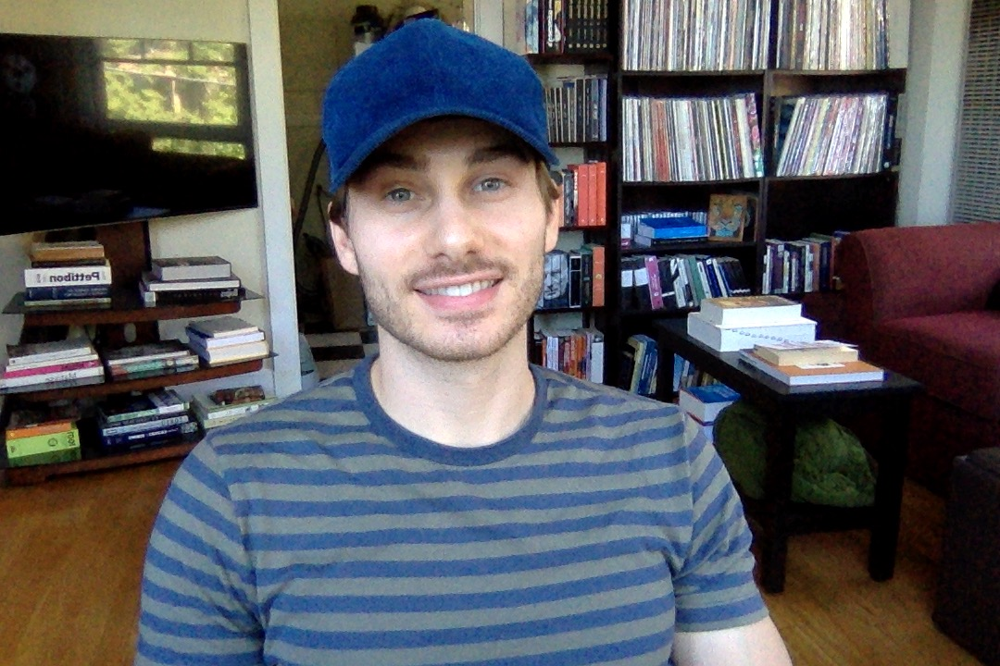

I am a student of Full-Stack Web Development attending the University of Washington through March
2019.
I have a special interest in front-end development, but am learning how to handle your back-end
needs
as well. Coming from a liberal arts background (B.A. Rhetoric and Writing, UT Austin) and years of
professional work in copywriting, copyediting, copyproofing, and writing market
demographics/psychographics, not only can I build you a website--I can make sure the copy on your
website is ace. No matter your need, be it personal or professional, I can build you the particular
website of your dreams with both a technical and artistic approach. Drop me a line and let's begin!
Get to know me: my hobbies include literature, music, art, camping, hiking, backpacking,
exercise
of all kinds, cooking, web development, and time spent with my cats and girlfriend.